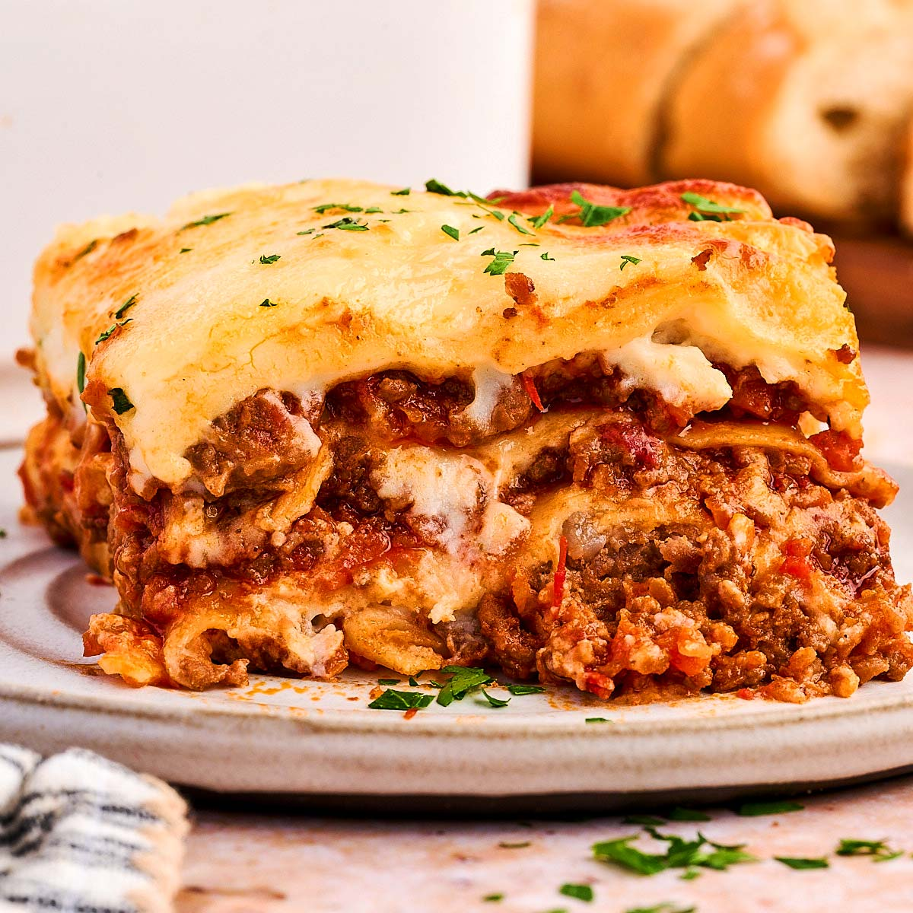

What makes this classic lasagna recipe so spectacular? Homemade meat sauce and plenty of cheese. Best of all, it's easy to make lasagna ahead of time so dinner can be ready in a flash.
Lasagna was one of the first dishes I learned to make in college. The early attempts were based on an easy lasagna recipe that kept dishes to a minimum but still provided plenty of leftovers. When I would cook it, the irresistible aroma of melting cheese and robust pasta sauce would waft down the hall. It earned me a reputation as the cook on my floor.